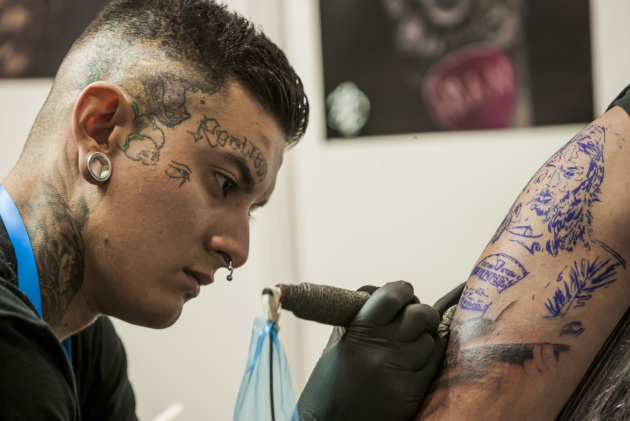

Yagan BlackHoleInk.
Tatuador experimentado en old school, neotradicional, black&grey y gótico.
-
El arte siempre ha sido su pasión. Se enorgullece de todos sus trabajos y le encanta crear cualquier cosa, ya sea desde el realismo hasta los dibujos animados. No se limita a lo que puede crear y siempre se esfuerza por superarse como artista.
Milagros Lunatika.
Tatuadora super experimentada en dotwork, handpoke, blackwork y black&grey.
-
El tatuaje siempre ha despertado su interés y es algo que ha querido hacer desde que era joven. Le sorprende poder aplicar obras de arte y creaciones personalizadas en un lienzo humano.
Ezequiel ManoAzul.
Tatuador experimentado en neotradicional, blackwork, old school, realismo y dotwork.
-
Para él es una práctica muy espiritual y se lo toma muy en serio. Cada cliente es especial y siempre está emocionado de conectarse con ellos y comprender realmente el significado de su diseño para hacerles el mejor tatuaje que pueda.
Abi Trashy.
Tatuadora y piercer experimentada en todos los estilos.
-
Abi tiene una gran comprensión del estilo y el diseño femenino junto con una versión completamente única del tatuaje. Ella es buscada y conocida por su precisión a la hora de trabajar.